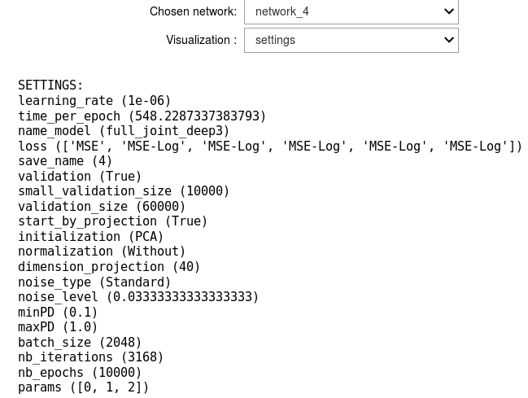
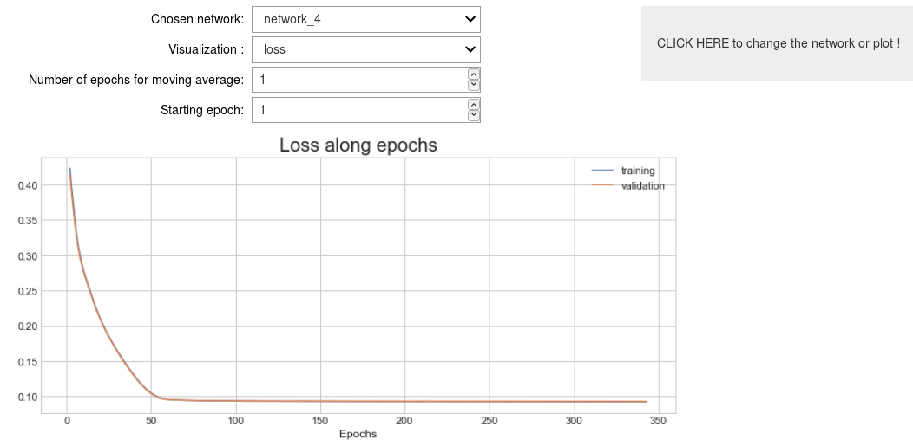
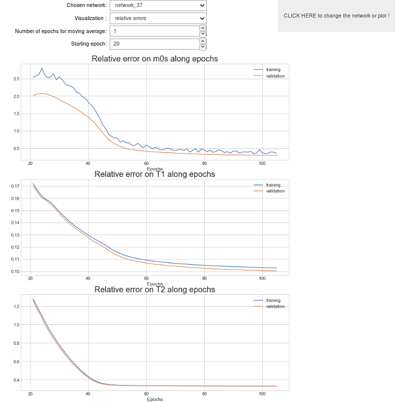
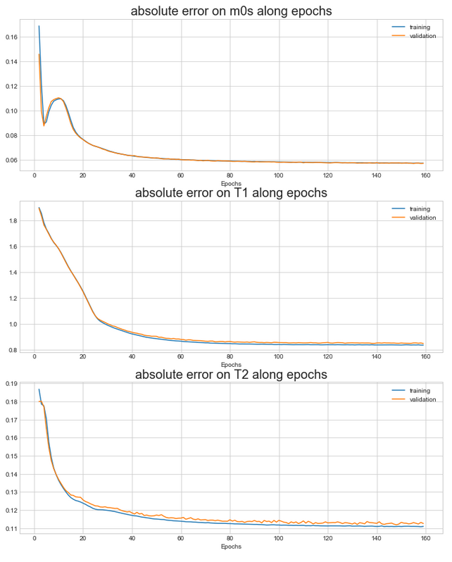
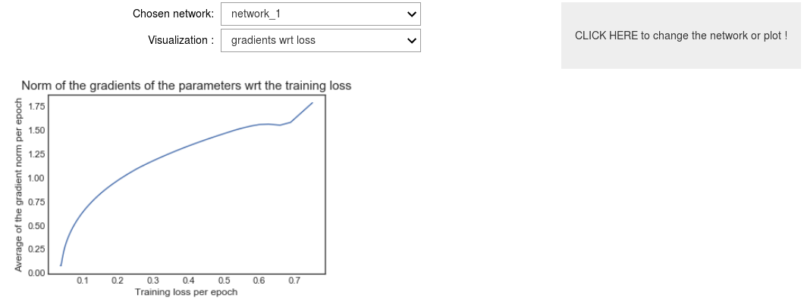

Visualize the results¶
We explain here the way you can easily study the results of your experiments.
We designed an interactive tool to study the basic properties of the trainings that you have done. To use this interactice interface, we only need to launch the notebook offline_visualize_results.ipynb located in the folder notebooks at the root of the project. In this page, we provide a description of the different visualizations allowed by this tool.
Requirements¶
In the root directory of the project, you need to have: - a folder named settings_files_offline containing the settings files used for the trainings . - a folder named save_networks_offline containing the torch dictionary automatically saved during the training.
Note that these folders will be automatically generated if you follow the usual way to launch the code as explained here.
Visualization of the results¶
Launch the notebook offline_visualize_resuts.ipynb located in the folder notebooks with Jupyter. Running the cells, you will find an interactive tool allowing you to choose the network you want to study and the information you want to visualize.
In the following, I list the visualizations that you can choose using this interactive tool. Some conditions can be asked to have access to some visualizations. In such cases, those conditions will be precised in a paragraph entitled Requirements.
Settings¶
Choosing this option, you will be able to see the details of the settings chosen for the training considered.

Loss¶
This option plots the evolution of the loss function along the epochs.
If the parameter validation of the settings is True, you will see both the training and the validation loss. Otherwise, only the training loss will be visible.

Relative Errors¶
Selecting the option Relative errors, figures presenting the evolution of the relative errors on the different parameters estimated along the epochs will be plotted.
If the parameter validation of the settings is True, you will see both the training and the validation relative errors. Otherwise, only the training relative errors will be visible.

Absolute Errors¶
Selecting the option Absolute errors, figures presenting the evolution of the absolute errors on the different parameters estimated along the epochs will be plotted.
If the parameter validation of the settings is True, you will see both the training and the validation absolute errors. Otherwise, only the training absolute errors will be visible.

Absolute Errors Over CRBs¶
Selecting the option Absolute errors over CRBs, figures presenting the evolution of the absolute errors divided by the square root of the CRBs on the different parameters estimated along the epochs will be plotted.
If the parameter validation of the settings is True, you will see both the training and the validation absolute errors over the CRBs. Otherwise, only the training curves will be visible.
Gradients wrt loss¶
This option will plot the evolution of the average (on each epoch) of the norm of the gradients of the parameters of the network with respect to the training loss. This objective of this figure is to ensure you that your training behaves correctly. You should see that the average of the norm of the gradients is converging towards zero with the loss deacreasing.

Error¶
Requirement: This option is visible only if the parameter validation of the settings is True.